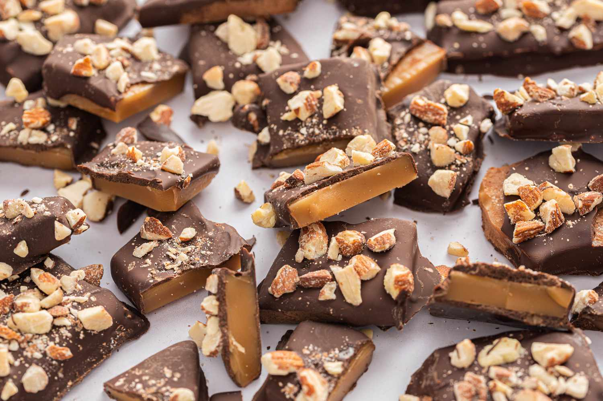

English Toffee
Homepage

A recipe with simple ingredients perfect for the holidays!
Ingredients
- Unsalted Butter (2 cups)
- White Sugar (2 cups)
- Salt (1/4 teaspoon)
- Semisweet Chocolate Chips (2 cups)
- Finely Chopped Almonds (1 cup, can be substituted with walnuts or pecans, if desired)
Steps
- Combine butter, sugar, and salt in a large, heavy-bottomed saucepan over medium heat; stir constantly in one direction until butter is melted, about 5 minutes.
- Meanwhile, line a 9x13-inch baking dish with a sheet of parchment paper, letting it overhang two sides of the dish.
- Once the butter has melted, stop stirring and bring mixture to a boil. Once boiling, cook, stirring only 2 to 3 times, until it turns a dark amber color and the temperature reaches 285 degrees F (137 degrees C) on a candy thermometer, 20 to 30 minutes.
- Immediately pour toffee into the prepared baking dish. Sprinkle chocolate chips on top and let sit until they soften, 1 to 2 minutes. Use a spatula to spread softened chocolate into a thin, even layer. Sprinkle nuts over the chocolate and press down slightly; wearing a plastic bag over your hand will minimize the mess.
- Place toffee in the refrigerator until set, about 1 hour.
- Lift hardened toffee out of the baking dish with the parchment paper. Break into pieces and store in an airtight container.
Original AllRecipes Recipe